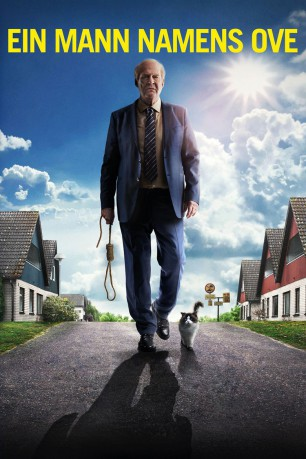

IMDB-Wertung: 7.6 / 10
IMDB-Wertung: 7.6 / 10  Metascore:
Metascore: 
In der Romanverfilmung Ein Mann namens Ove wird ein alter Miesepeter, der mit seinem Dasein eigentlich schon abgeschlossen hat, von einer neuen Familie in seiner Nachbarschaft wiederbelebt.
 gesehen am 28.04.2016
gesehen am 28.04.2016 IMDB-Wertung: 7.6 / 10 Metascore:
In der Romanverfilmung Ein Mann namens Ove wird ein alter Miesepeter, der mit seinem Dasein eigentlich schon abgeschlossen hat, von einer neuen Familie in seiner Nachbarschaft wiederbelebt.
Jahr: 2015
Dauer: 116 Minuten
FSK:
Land: Schweden Studio: Concorde FilmverleihTonspuren: DTS - ,
Untertitel:
Auflösung: 1080p (1920x808) Größe: 6359 MB
Regisseur: Hannes Holm
Drehbuch: A.I. Bezzerides
Soundtrack:
Darsteller:
 Rolf Lassgård als Ove
Rolf Lassgård als Ove Jerker Fahlström als Konduktören
Jerker Fahlström als KonduktörenDatei: X:\2015(G-M)\Mann namens Ove, Ein (2015, FSK, 1920x808).mkv seit 27.04.2016
Festplatte: HD 2015(A-Z)
 Es gibt insgesamt 129 Filme in der Gruppe '2015(G-M)'
Es gibt insgesamt 129 Filme in der Gruppe '2015(G-M)'